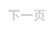

-
“技术思维”赢了“内容为王”？让我们回到2000年年初，雅虎公司当时正以1250亿美元的市值站在互联网行业的顶峰
是全世界访问量最多的网站“统帅”。而就在那个时候，致力于互联网搜索的Google突然崛起。而现在，Alphabet
（Google母公司）以5160亿美元的市值位列全球最有价值公司排行榜第二名，去年的营业利润也达到163.5亿美元
相比较而言，在去年遭遇43.6亿美元的亏损后，雅虎已在周......10-12 / 2018
-
“技术思维”赢了“内容为王”？让我们回到2000年年初，雅虎公司当时正以1250亿美元的市值站在互联网行业的顶峰
是全世界访问量最多的网站“统帅”。而就在那个时候，致力于互联网搜索的Google突然崛起。而现在，Alphabet
（Google母公司）以5160亿美元的市值位列全球最有价值公司排行榜第二名，去年的营业利润也达到163.5亿美元
相比较而言，在去年遭遇43.6亿美元的亏损后，雅虎已在周......10-12 / 2018
-
一篇题为“没事别想不开去创业公司”，公号“Spenser的二次学习日记”，作者Spenser
这篇讲述创业公司有多难对人要求有多高的文章，7月22日21点发出，次日午间阅读量已过十万加
还有一篇文章，题为“节节败退的中产阶级”，公号“野狼大势”，自称由野狼编辑部原创
但这篇文章大部分内容来自于对《经济学人》一篇“China's Middle Class”的编译，夹杂着野狼编辑部自己的些许观10-12 / 2018
-
如果你是一个数字娱乐爱好者，烦恼没时间去逛美国 E3 展、日本东京电玩展以及德国科隆国际游戏展，那一定就不能错过 ChinaJoy
中国国际数码互动娱乐展览会（简称：ChinaJoy）是全球数码互动娱乐领域最具影响力的盛会。自 2004 第一次举办
ChinaJoy 已成功开展十三届，每年都会吸引大批的游戏厂商和游戏爱好者前往。同期举办的“三展四会”系列会展阵容
涵盖了 PC 网络游戏、移动游10-12 / 2018
-
1
- 